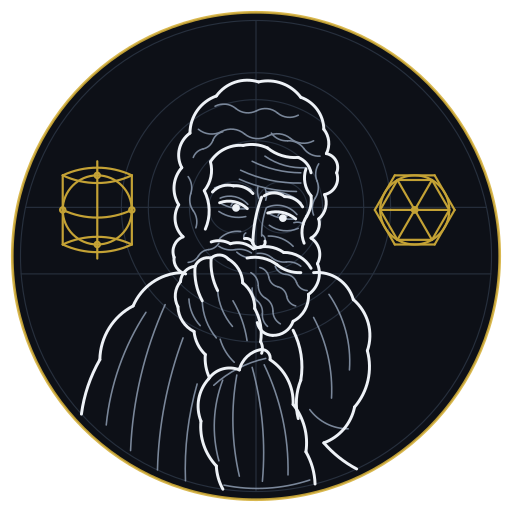

Archimedes of Syracuse¶

Archimedes of Syracuse (c. 287–212 BCE) united geometry, mechanics, and infinitesimal reasoning to measure the circle, square the parabola, balance centers of gravity, and discover the surface area and volume of the sphere. This archive brings together his surviving treatises—from the Measurement of a Circle and On the Equilibrium of Planes to the Constantinople Palimpsest Method—in Sir Thomas L. Heath’s critical English editions, paired with calibrated vector diagrams and a full Heiberg–Heath concordance.
Works in This Archive¶
Heiberg I & Heath 1897 · 3 Propositions
Measurement of a Circle (*Dimensio Circuli*) — Proves by double exhaustion that a circle equals the right triangle on its circumference and radius, and bounds \(\pi\) between \(3\frac{10}{71}\) and \(3\frac{1}{7}\) using inscribed and circumscribed 96-gons.
Heiberg II & Heath 1897 · Epistle · 24 Propositions
Quadrature of the Parabola (*Quadratura Parabolae*) — Establishes that the area of a parabolic segment is four-thirds of its inscribed triangle, proved first by mechanical balance and then by pure geometric exhaustion using the infinite series \(1 + \frac{1}{4} + \frac{1}{16} + \cdots\).
Heiberg II & Heath 1897 · 2 Books · 25 Propositions
On the Equilibrium of Planes (*De Planorum Aequilibriis*) — Grounds theoretical statics in seven postulates, proves the Law of the Lever for commensurable and incommensurable magnitudes, and locates the centers of gravity of triangles, parallelograms, and parabolic segments.
Heiberg I–II & Heath 1897 · 4 Treatises
Sphere and Cylinder, Spirals & Conoids — Unites Archimedes’ grand Dositheus treatises: the surface and volume of the sphere (the 2:3 Tomb Theorem), tangent rectification and quadrature of the Archimedean spiral, and cubatures of paraboloids, hyperboloids, and spheroids.
Constantinople Palimpsest · Heiberg 1907 · Heath 1912 · 15 Propositions
The Method of Mechanical Theorems — Deciphered by J. L. Heiberg from the erased Constantinople Palimpsest, revealing Archimedes’ private letter to Eratosthenes on how slicing solids into indivisible lines and weighing them on an imaginary lever led to his greatest discoveries.
Liber Assumptorum · Thābit ibn Qurra · Heath 1897 · 15 Propositions
Book of Lemmas (*Kitāb al-Maʾkhūdhāt*) — Fifteen planar geometric gems preserved in Arabic by Thābit ibn Qurra, including the shoemaker’s knife (Arbelos), Archimedes’ Twin Circles, the Salinon, neusis angle trisection, and a golden-section construction.
Heiberg II · Pappus V.19 · Heath 1897
The Sand-Reckoner & Semi-Regular Solids — Preserves Aristarchus’s heliocentric universe and Archimedes’ myriad-octad number system for counting grains of sand, paired with the 14-piece Stomachion square puzzle and Pappus’s census of the thirteen Archimedean polyhedra.
Key Features¶
11 Interactive Geometric Plates
Calibrated vector diagrams trace every construction—from the 96-gon bounds on \(\pi\) and parabolic exhaustion to the Archimedean spiral, Arbelos, Salinon, and Palimpsest lever.
Heiberg–Heath–Palimpsest Concordance
Cross-reference every theorem across Heiberg’s critical Greek volumes, Heath’s 1897 Works, the 1912 Method Supplement, and Eutocius’s commentaries in the Concordance.
Synchronized Summary & Notes Tracks
Each treatise pairs Heath’s faithful English text with an editorial Summary track and archival Notes track detailing manuscript witnesses and mathematical structure.
Reference & Project¶
Scholarly Apparatus
People — Archimedes, Dositheus, Eratosthenes, Eutocius, Thābit ibn Qurra, Heiberg, and Heath
Concordance & Bibliography — Proposition numbering across editions and critical sources
Glossary — Key Doric Greek, mechanical, and geometric terms
About This Project
About — Scope, sources, and editorial methodology
Using This Edition — Reading guide, track switching, and diagram controls
Log & Modules — Development notes and Python package reference